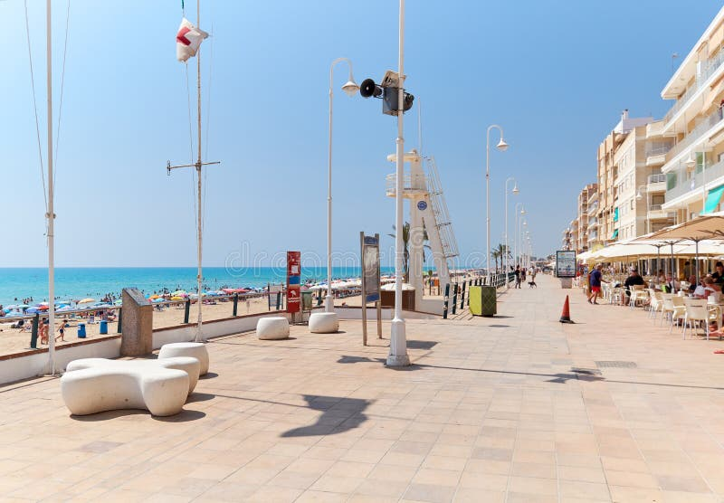

Bienvenido a Guardamar
Guardamar del Segura es una joya costera ubicada en la provincia de Alicante. Destaca por sus más de 11 kilómetros de playas de arena fina y dorada, sus célebres dunas rodeadas por una frondosa pineda y una calidad de vida envidiable.
Es el destino perfecto si buscas combinar relax en la playa, naturaleza e integración cultural. Además, el ambiente es multicultural y acogedor: se habla tanto español como inglés en muchos de sus establecimientos, lo que facilita una experiencia inolvidable para turistas de todas partes del mundo.

Mi Opinión
Para mí, Guardamar del Segura es el lugar ideal para desconectar y disfrutar del clima mediterráneo durante todo el año. Lo que más valoro es el contraste único entre el mar y el gran parque natural de las dunas, algo muy difícil de encontrar en otras zonas turísticas. Además, el ambiente tranquilo por el día y su variada oferta por la noche lo convierten en un destino perfecto tanto para jóvenes como para familias. Sin duda, es un sitio al que siempre apetece volver.